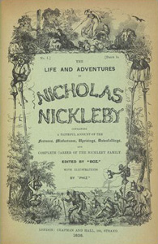

After a poor investment that results in the loss of all his money, Nicholas Nickleby’s father dies, leaving Nicholas to look after his mother and Kate, his younger sister. Nicholas’s unpleasant, hateful Uncle Ralph finds Nicholas a low-paying job as an assistant to Wackford Squeers, who works as the schoolmaster at Dotheboys Hall in Yorkshire. Squeers is unpleasant, and only has one eye.
Nicholas receives word from Newman Noggs, Uncle Ralph’s clerk, offering Nicholas assistance. Noggs hates Ralph, too, but his personal history and poor economic condition has pushed him into Ralph’s employ.
Nicholas learns that Squeers takes unwanted children into his school and forces them to live under terrible conditions, pocketing most of the money their parents send for their upkeep. The lessons Squeers teaches are terrible, too, revealing his own lack of education.
Fanny Squeers, Wackford’s daughter, takes a liking to Nicholas, and convinces herself that Nicholas loves her. At a card game they both attend, Nicholas flirts with 'Tilda Price. She, however, is engaged to John Browdie. Both John and Fanny take offense to Nicholas’s flirting, and Nicholas makes it clear to Fanny that he does not share her feelings.
In return, Fanny makes life difficult for Nicholas and for his friend, Smike. Nicholas intervenes during one of Squeers’ beatings of Smike - a perpetually ill and dim-witted boy who befriends Nicholas - and Nicholas brutally attacks Squeers.
John Browdie comes upon Nicholas after Nicholas leaves the school after the attack. Browdie takes pleasure in Squeers’ beating and gives Nicholas money and a walking stick. Later, Smike finds Nicholas, and the two friends set out for London.
Kate and her mother are forced by Uncle Ralph to leave their house and move in with the friendly Miss LaCreevy in a house in the London slums. Kate goes to work for a milliner, but because of office intrigue, she is not liked.
Nicholas seeks the assistance of Noggs, who reveals that Uncle Ralph has received a letter from Fanny, making Nicholas seem like the aggressor in his fight with Squeers. Ralph uses the attractive Kate to entice wealthy business partners at a dinner party. During the dinner, Kate is assaulted, though Uncle Ralph intervenes before she is injured. Ralph forces Kate to keep the encounter a secret.
Later, Nicholas and Smike head to Portsmouth, intent on becoming sailors. Instead, a theater company hires Nicholas. The boys are warmly welcomed by the assorted theater folk, and successfully make their debut in Romeo and Juliet. Nicholas begins flirting with Miss Snevellici, the Juliet to his Romeo.
In London, Kate is fired when the business gets a new owner. Kate again becomes the target of unwanted attention, and is rescued by Noggs. Noggs reaches out to Nicholas, who quickly returns to London.
Once in London, Nicholas overhears Kate’s assailants boasting in a coffeehouse, and he attacks them. As the assailants flee, they fight amongst themselves. As a result, one of them is killed, and the other heads to France. Uncle Ralph loses a large amount of money that was owed to him by the dead man.
Nicholas, Smike, his mother, and Kate all move back into Miss LaCreevy’s house. Soon, though, Nicholas meets the friendly and generous Charles Cheeryble, who offers Nicholas a job and provides a home for Nicholas and his family.
Squeers comes to London, and together with Ralph, plots more pain for Nicholas. During this time, Squeers finds Smike and kidnaps him. As fate would have it, John Browdie is there and rescues Smike. Nicholas falls in love with Madeline Bray, who very nearly marries someone else.
Smike later contracts tuberculosis. Smike tells Nicholas that he loves Kate before dying in his friend’s arms.
As the novel approaches its conclusion, Uncle Ralph and Squeers reveal a plot to steal the will of Madeline’s grandfather. Ralph learns that Smike was actually his son from a beggar who has been appearing throughout London. Broken by this news, Ralph commits suicide.
For his role in the crime, Squeers is sentenced to transportation to Australia. The Nicklebys all return to Devonshire.
1903 - A two-minute short showing the fight scene at "Dotheboys Hall" was released.
1912 - Nicholas Nickleby, a half-hour film adaptation which attempted to cover most of the novel, featured Victory Bateman as Miss La Creevey and Ethyle Cooke as Miss Snevellici.
1947 - Nicholas Nickleby, the first sound film adaptation, starring Cedric Hardwicke as Ralph Nickleby, Sally Ann Howes as Kate, Derek Bond as Nicholas and Stanley Holloway as Crummles.
1957 - Nicholas Nickleby, a TV series lasting one season, with William Russell in the title role.
1968 - Nicholas Nickleby, a thirteen-part TV serial starring Martin Jarvis, directed by Joan Craft.
1977 - Nicholas Nickleby, a BBC Television adaptation in a production directed by Christopher Barry, starring Nigel Havers in the title role, Derek Francis as Wackford Squeers and Patricia Routledge as Madame Mantalini.
1980 - Nicholas Nickleby, a large-scale version (from playwright David Edgar) was premiered in the West End by the Royal Shakespeare Company. It was a theatrical experience which lasted more than ten hours (counting intermissions and a dinner break - the actual playing time was approximately eight-and-a-half hours). The production received both critical and popular acclaim. All of the actors played multiple roles because of the huge number of characters, except for Roger Rees, who played Nicholas, and David Threlfall, who played Smike (due to the large amount of time they were on stage). The play moved to Broadway in 1981. In 1982 the RSC had the show recorded as three two-hour and one three-hour episode for Channel 4, where it became the channel's first drama. In 1983, it was shown on television in the United States, where it won an Emmy Award for Best Mini-Series. This version was released on DVD and rebroadcast in December 2007 on BBC Four.
2001 - The Life and Adventures of Nicholas Nickleby, an ITV production which won a BAFTA and an RTS award for costume design. It was directed by Stephen Whittaker. It featured James D'Arcy, Charles Dance, Pam Ferris, Lee Ingleby, Gregor Fisher, Tom Hollander, J. J. Feild and Tom Hiddleston.
2002 - Nicholas Nickleby, a film production which was directed by American director Douglas McGrath and its cast featured Charlie Hunnam, Anne Hathaway, Jamie Bell, Alan Cumming, Jim Broadbent, Christopher Plummer, Juliet Stevenson, Nathan Lane, Tom Courtenay and Barry Humphries.
2012 - Nick Nickleby, a modern TV drama (with several changes to the plot and characters) for the BBC, filmed in Belfast with mainly local actors. In this version, the title character was played by Andrew Simpson, with Linda Bassett (Mrs Smike), Adrian Dunbar (Ralph Nickleby), Jonathan Harden (Newman Noggs - also narrating the series), Bronagh Gallagher (Mrs Nickleby) and Jayne Wisener (Kate Nickleby).